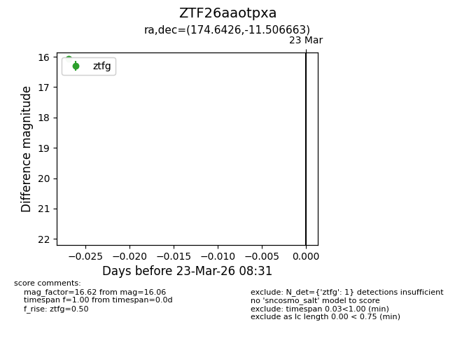
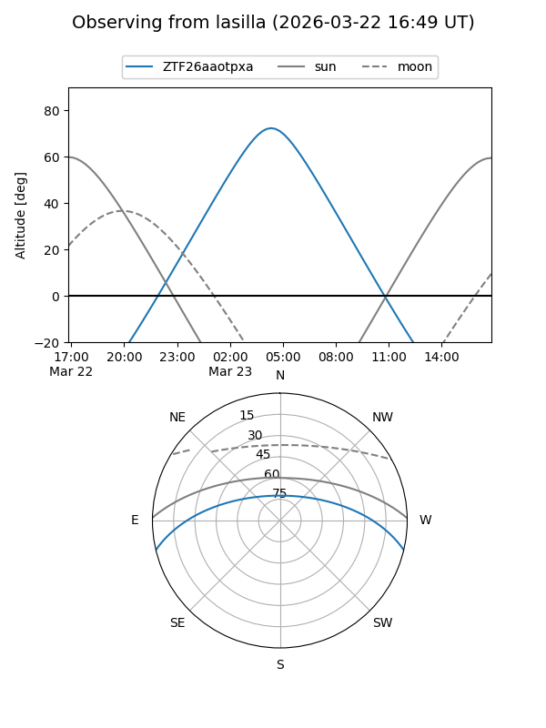
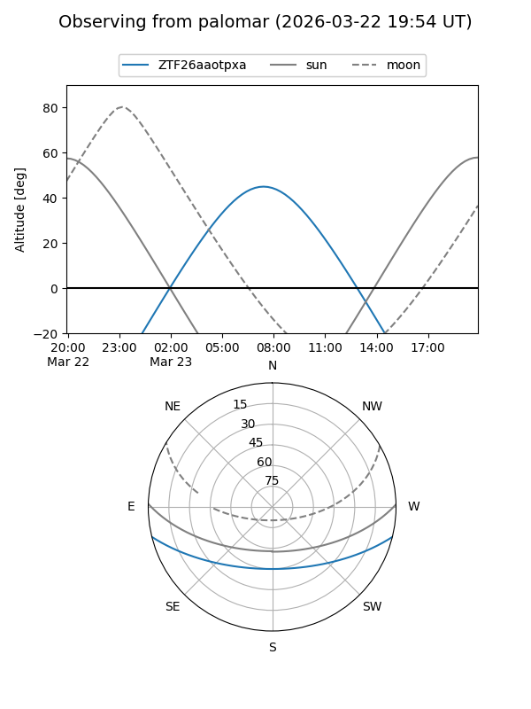

ZTF26aaotpxa
Target ZTF26aaotpxa at 2026-03-23 08:33
Aliases and brokers:
FINK: link
Lasair: link
ALeRCE: link
alt names
ZTF26aaotpxa (ztf,fink_ztf)
Coordinates:
equatorial (ra, dec) = 174.6426,-11.50666
equatorial (HMS+DMS) = 11:38:34.22,-11:30:23.99
galactic (l, b) = (275.9609,+47.51299)
Flags:
Photometry:
last ztfg=16.06
1 ztfg detections
Lightcurve

Visibility


Additional plots